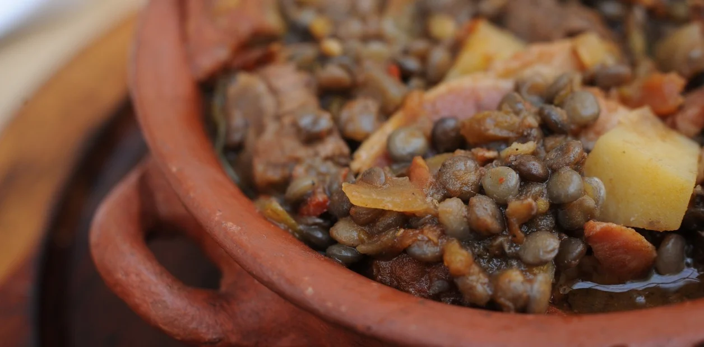

Cine Club AntiDomingo
Próximo plato
4 de octubre

Guiso de lentejas
Comida
- Picadita
- Guiso de lentejas*
- Pan casero
- Flan de coco con dulce de leche**
Bebidas disponibles:
- Vino tinto (Malbec - Uxmal)
- Cerveza rubia (artesanal - El lucero)
- Soda
- Agua de filtro
*Hay opción vegetariana (avisar)
**Es apto celiaque
Funciones siguientes
Empanadas
Rellenos varios, incluyendo vegetarianos

Pizza casera
Rellenos varios, incluyendo vegetarianos

Ravioles caseros
Rellenos varios, incluyendo vegetarianos

Hamburguesas caseras
Tendremos medallones de lentejas como alternativa vegetariana